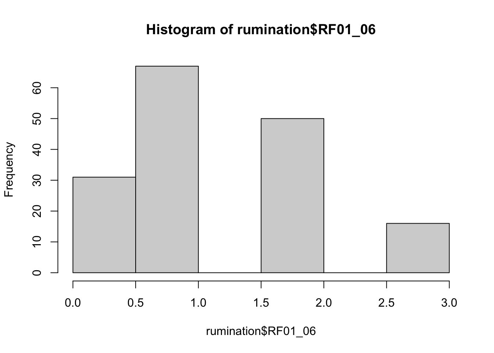
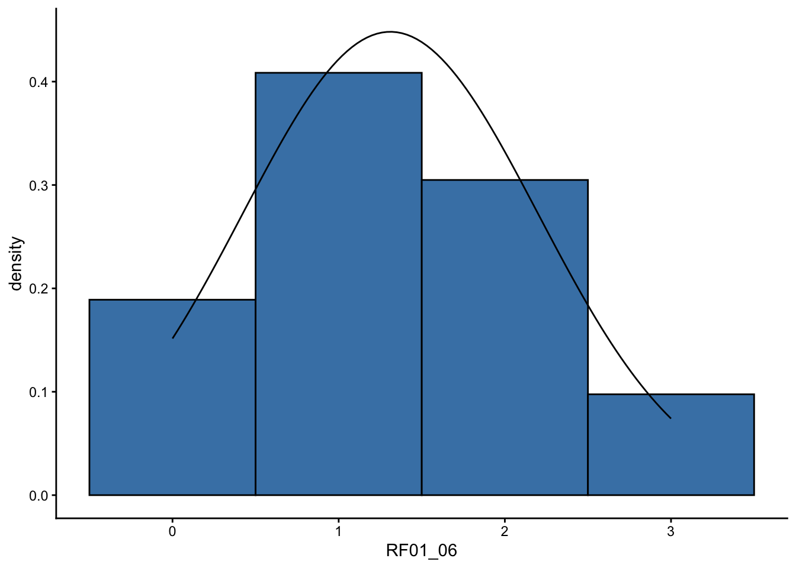
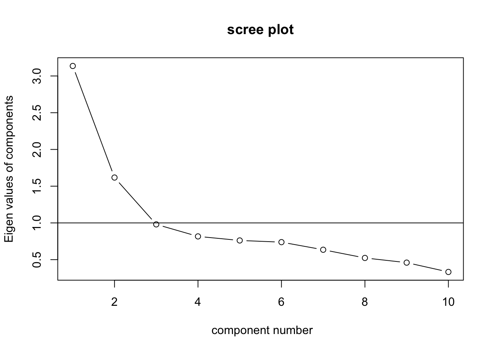

7 Psychometrie
7.1 Einführung
In diesem Kapitel berechnen wir statistische Maße, die uns helfen, die Güte von Items aus Fragebögen zu beurteilen. Dazu nutzen wir einen Datensatz von Michel-Kröhler et al. (2023), der im Open Science Framework (OSF) veröffentlicht wurde und unter anderem einen Fragebogen zum Konstrukt Rumination (Huffziger & Kühner, 2012) beinhaltet. In diesem Fragebogen werden zwei Dimensionen des Konstrukts Rumination unterschieden: Grübeln und Reflektion. Laden wir also die Daten von OSF und nutzen das Paket dplyr, um den uns interessierenden Teil des Datensatz auszuwählen.
Nachdem wir das Paket dplyr installiert und geladen haben, können wir die Daten einlesen.
data_url <- "https://osf.io/39kr8/download"
rumination <- read.csv(file = data_url) %>%
select(c(code,RF01_01:RF01_10))Wir benutzen den head()-Befehl, um uns die ersten sechs Zeilen des Datensatzes anzeigen zu lassen.
## code RF01_01 RF01_02 RF01_03 RF01_04 RF01_05 RF01_06
## 1 1 2 3 1 1 2 2
## 2 2 1 3 2 2 1 1
## 3 3 1 2 1 1 1 1
## 4 4 1 2 1 3 4 1
## 5 5 1 2 2 2 1 2
## 6 6 1 1 1 1 1 1
## RF01_07 RF01_08 RF01_09 RF01_10
## 1 1 2 1 4
## 2 1 1 3 2
## 3 1 1 2 2
## 4 1 1 2 3
## 5 2 1 2 2
## 6 1 1 1 2Wir sehen, dass die erste Variable code eine Kennung für die einzelnen Versuchspersonen ist und die Variablen RF01_01 bis RF01_10 die zehn Items aus dem Ruminationsfragebogen darstellen. Der Fragebogen wird auf einer vierstufigen Skala mit der verbalen Verankerung fast nie (1), manchmal (2), oft (3) und fast immer (4) beantwortet.
7.2 Welche statistischen Grundvoraussetzungen sollten Items erfüllen?
Bevor wir mit einem Datensatz anfangen zu arbeiten, überprüfen wir diesen bezüglich folgender Fragen:
- Stimmen die Minima und Maxima der Variablen?
- Wurden Variablen, die negativ kodiert sind, rekodiert?
- Sind die Variablen approximativ normalverteilt?
- Differenzieren die Variablen zwischen Personen?
Wir nutzen das Paket psych um diese Fragen zu beantworten.
Mit der Funktion describe können wir wichtige Kennwerte, wie Mittelwert, Standardabweichung, Schiefe und Kurtosis, berechnen. Um die Informationen aus der describe-Funktion übersichtlich ausgeben zu lassen, können wir die Funktion kable aus dem Paket knitr benutzen. Man könnte sich die Tabelle aber auch einfach so anschauen.
| vars | n | mean | sd | median | trimmed | mad | min | max | range | skew | kurtosis | se | |
|---|---|---|---|---|---|---|---|---|---|---|---|---|---|
| code | 1 | 164 | 82.500000 | 47.4868403 | 82.5 | 82.500000 | 60.7866 | 1 | 164 | 163 | 0.0000000 | -1.2219724 | 3.7080992 |
| RF01_01 | 2 | 164 | 1.481707 | 0.7218973 | 1.0 | 1.333333 | 0.0000 | 1 | 4 | 3 | 1.4248894 | 1.4569871 | 0.0563707 |
| RF01_02 | 3 | 164 | 2.250000 | 0.9159460 | 2.0 | 2.204546 | 1.4826 | 1 | 4 | 3 | 0.1577080 | -0.8930907 | 0.0715234 |
| RF01_03 | 4 | 164 | 1.932927 | 0.9209964 | 2.0 | 1.833333 | 1.4826 | 1 | 4 | 3 | 0.6468187 | -0.5465893 | 0.0719177 |
| RF01_04 | 5 | 164 | 2.097561 | 0.8524200 | 2.0 | 2.060606 | 1.4826 | 1 | 4 | 3 | 0.2872895 | -0.7152421 | 0.0665628 |
| RF01_05 | 6 | 164 | 1.439024 | 0.8229464 | 1.0 | 1.234849 | 0.0000 | 1 | 4 | 3 | 1.9335396 | 2.8746809 | 0.0642613 |
| RF01_06 | 7 | 164 | 2.310976 | 0.8900963 | 2.0 | 2.265151 | 1.4826 | 1 | 4 | 3 | 0.1866766 | -0.7299875 | 0.0695048 |
| RF01_07 | 8 | 164 | 1.487805 | 0.7048283 | 1.0 | 1.356061 | 0.0000 | 1 | 4 | 3 | 1.1922326 | 0.3976648 | 0.0550378 |
| RF01_08 | 9 | 164 | 1.774390 | 0.8531876 | 2.0 | 1.681818 | 1.4826 | 1 | 4 | 3 | 0.7382218 | -0.4891511 | 0.0666228 |
| RF01_09 | 10 | 164 | 1.920732 | 0.8929496 | 2.0 | 1.840909 | 1.4826 | 1 | 4 | 3 | 0.5651287 | -0.6693078 | 0.0697276 |
| RF01_10 | 11 | 164 | 2.109756 | 0.9067720 | 2.0 | 2.037879 | 1.4826 | 1 | 4 | 3 | 0.4224340 | -0.6585297 | 0.0708070 |
7.2.1 Stimmen die Minima und Maxima der Variablen?
Wir sehen in der obigen Tabelle, dass unsere Werte zwischen 1 und 4 liegen. Wir möchten, dass die Werte zwischen 0 und 3 liegen. Daher transformieren wir die entsprechenden Variablen mit dem dplyr-Befehl mutate:
rumination <- rumination %>%
mutate(RF01_01 = RF01_01 - 1,
RF01_02 = RF01_02 - 1,
RF01_03 = RF01_03 - 1,
RF01_04 = RF01_04 - 1,
RF01_05 = RF01_05 - 1,
RF01_06 = RF01_06 - 1,
RF01_07 = RF01_07 - 1,
RF01_08 = RF01_08 - 1,
RF01_09 = RF01_09 - 1,
RF01_10 = RF01_10 - 1)
knitr::kable(describe(rumination))| vars | n | mean | sd | median | trimmed | mad | min | max | range | skew | kurtosis | se | |
|---|---|---|---|---|---|---|---|---|---|---|---|---|---|
| code | 1 | 164 | 82.5000000 | 47.4868403 | 82.5 | 82.5000000 | 60.7866 | 1 | 164 | 163 | 0.0000000 | -1.2219724 | 3.7080992 |
| RF01_01 | 2 | 164 | 0.4817073 | 0.7218973 | 0.0 | 0.3333333 | 0.0000 | 0 | 3 | 3 | 1.4248894 | 1.4569871 | 0.0563707 |
| RF01_02 | 3 | 164 | 1.2500000 | 0.9159460 | 1.0 | 1.2045455 | 1.4826 | 0 | 3 | 3 | 0.1577080 | -0.8930907 | 0.0715234 |
| RF01_03 | 4 | 164 | 0.9329268 | 0.9209964 | 1.0 | 0.8333333 | 1.4826 | 0 | 3 | 3 | 0.6468187 | -0.5465893 | 0.0719177 |
| RF01_04 | 5 | 164 | 1.0975610 | 0.8524200 | 1.0 | 1.0606061 | 1.4826 | 0 | 3 | 3 | 0.2872895 | -0.7152421 | 0.0665628 |
| RF01_05 | 6 | 164 | 0.4390244 | 0.8229464 | 0.0 | 0.2348485 | 0.0000 | 0 | 3 | 3 | 1.9335396 | 2.8746809 | 0.0642613 |
| RF01_06 | 7 | 164 | 1.3109756 | 0.8900963 | 1.0 | 1.2651515 | 1.4826 | 0 | 3 | 3 | 0.1866766 | -0.7299875 | 0.0695048 |
| RF01_07 | 8 | 164 | 0.4878049 | 0.7048283 | 0.0 | 0.3560606 | 0.0000 | 0 | 3 | 3 | 1.1922326 | 0.3976648 | 0.0550378 |
| RF01_08 | 9 | 164 | 0.7743902 | 0.8531876 | 1.0 | 0.6818182 | 1.4826 | 0 | 3 | 3 | 0.7382218 | -0.4891511 | 0.0666228 |
| RF01_09 | 10 | 164 | 0.9207317 | 0.8929496 | 1.0 | 0.8409091 | 1.4826 | 0 | 3 | 3 | 0.5651287 | -0.6693078 | 0.0697276 |
| RF01_10 | 11 | 164 | 1.1097561 | 0.9067720 | 1.0 | 1.0378788 | 1.4826 | 0 | 3 | 3 | 0.4224340 | -0.6585297 | 0.0708070 |

7.2.2 Wurden Variablen, die negativ kodiert sind, rekodiert?
Items, die negativ kodiert sind, muss man vor allen weiterführenden Analysen invertieren. Um ein negativ gepoltes Item zu rekodieren wendet man folgende Formel an:
\[\text{neuer Wert} = \text{maximaler Wert} \text{ + } \text{minimaler Wert} \text{ - } \text{alter Wert}\]
Wenn also die höchste Antwortkategorie eines Fragebogens den Wert \(3\) hat und die niedrigste Antwortkategorie den Wert \(0\), dann rechnen wir für alle negativ gepolten Items \(\text{neuer Wert} = 3 \text{ + } 0 \text{ - } \text{alter Wert}\). Auch dazu kann man wieder die Funktion mutate nutzen:
rumination <- rumination %>%
mutate(RF01_01 = 3 - RF01_01,
RF01_05 = 3 - RF01_02,In diesem Fragebogen gibt es keine negativ kodierten Items, weswegen dieser Code nicht ausgeführt wird.
7.2.3 Sind die Variablen approximativ normalverteilt?
Die Antworten, die für jedes einzelne Item gegeben werden, sollen approximativ normalverteilt sein. Denn dann können wir statistische Kennwerte wie Mittelwert und Standardabweichung sinnvoll interpretieren. Wenn wir also einen Fragebogen neu entwickeln, prüfen wir, ob die Antworten, die unsere Stichprobe auf die einzelnen Items gegeben hat, approximativ normalverteilt sind. Approximativ normalverteilt heißt, dass kleinere Abweichungen von der Normalverteilung unproblematisch sind. Starke Abweichungen führen jedoch insbesondere bei der Interpretation statistischer Kennwerte und Korrelationen zu Problemen.

Um zu überprüfen, ob ein Item approximativ normalverteilt ist, sollten wir auf die Verwendung von Signifikanztests, wie z. B. den Kolmogorov-Smirnov-Test, verzichten, da wir in diesem Fall die Nullhypothese annehmen wollen. Wenn unsere Stichprobe klein bis moderat groß ist, wird die Normalverteilung fast nie abgelehnt, weil unsere Teststärke (Power) zu gering ist. Haben wir hingegen eine große Stichprobe, so wird die Normalverteilung fast immer abgelehnt, denn dann haben wir eine sehr hohe Teststärke und schon kleinste Abweichungen werden statistisch signifikant. Für uns sind aber lediglich starke Abweichungen von der Normalverteilung problematisch.
Mit welchem Umfang eine Stichprobe zu klein oder zu groß ist, hängt von der Fragestellung ab und lässt sich nicht pauschal in Zahlen festhalten. Wichtiger als der konrekte Stichprobenumfang ist, dass man sich der Problematik, die mit zu kleinen und zu großen Stichproben einhergehen, bewusst ist.
Bei der Beurteilung, ob unsere Items approximativ normalverteilt sind, können wir uns an eine Heuristik halten, die in Simulationsstudien von Hair et al. (2018) überprüft wurde. Wir bewerten ein Item als approximativ normalverteilt, wenn seine Schiefe innerhalb der Grenzen \(-2\) bis \(2\) liegt und seine Kurtosis innerhalb der Grenzen von \(-7\) bis \(7\). Schiefe und Kurtosis werden uns über die describe-Funktion aus dem Paket psych bereits ausgegeben. Wir nutzen die select-Funktion aus dem Paket dplyr und die kable-Funktion aus dem Paket knitr um uns diese beiden Kennwerte übersichtlich darstellen zu lassen:
| skew | kurtosis | |
|---|---|---|
| code | 0.0000000 | -1.2219724 |
| RF01_01 | 1.4248894 | 1.4569871 |
| RF01_02 | 0.1577080 | -0.8930907 |
| RF01_03 | 0.6468187 | -0.5465893 |
| RF01_04 | 0.2872895 | -0.7152421 |
| RF01_05 | 1.9335396 | 2.8746809 |
| RF01_06 | 0.1866766 | -0.7299875 |
| RF01_07 | 1.1922326 | 0.3976648 |
| RF01_08 | 0.7382218 | -0.4891511 |
| RF01_09 | 0.5651287 | -0.6693078 |
| RF01_10 | 0.4224340 | -0.6585297 |
Wir sehen, dass Schiefe und Kurtosis für alle unsere Items aus dem Ruminationsfragebogen innerhalb der Grenzwerte für eine Normalverteilung liegen. Wir können also davon ausgehen, dass keine relevanten Abweichungen von der Normalverteilung vorliegen. Wenn ein Item die Grenzwerte überschreitet, kann dies ein Grund sein, es in der Fragebogenentwicklung auszuschließen.
Wir können uns die Verteilung der Itemantworten auch grafisch anschauen, indem wir uns das Histogramm der Itemantworten anschauen. Dies geht einerseits mit der Funktion hist, die in baseR enthalten ist, oder etwas schöner mit dem Paket ggplot2.

Um eine schönere Grafik zu erstellen, müssen wir zurst das Paket ggplot2 laden.
# schöneres Histogramm
ggplot(data = rumination) +
geom_histogram(mapping = aes(x = RF01_06, y = ..density..),
fill = "steelblue", color = "black", binwidth = 1) +
stat_function(fun = dnorm, args = list(mean = mean(rumination$RF01_06),
sd = sd(rumination$RF01_06))) +
theme_classic()
Eine Beurteilung, ob die Itemantworten normalverteilt sind, erfordert aber ein sehr geübtes Auge und ist über Histogramme häufig sehr schwierig. Es sollte nicht als alleinige Beuretilungsgrundlage genutzt werden.
7.2.4 Differenzieren die Variablen zwischen Personen?
Items, die nicht zwischen Personen differenzieren, bei der also alle Probanden sehr ähnlich antworten, helfen uns nicht, individuelle Unterschiede in einer Merkmalsausprägung zu quantifizieren. Wir wollen solche Items also identifizieren und gegebenenfalls aus unserem initialen Itempool entfernen.
Ein Kriterium dafür, dass alle Versuchspersonen sehr ähnlich auf ein Item antworten, ist eine sehr geringe Standardabweichung. Dann nämlich variieren die Antworten zwischen den Personen kaum. Die vorhandenen Unterschiede zwischen den Personen spiegeln sich also nicht in unterschiedlichen Itemantworten wieder.
Es gibt keinen klaren Cutoff-Wert, ab dem man von einer zu geringen Standardabweichung spricht. Dieses Kriterium lässt sich nur im Vergleich zwischen den Items eines Fragebogens sinnvoll anwenden. Wir schauen uns also die Standardabweichungen aller Items an und wollen Items identifizieren, deren Standardabweichung viel geringer ist, als die der meisten anderen Items. Wenn alle Items eine ähnliche Standardabweichung aufweisen, gehen wir davon aus, dass alle Items ähnlich gut zwischen Personen mit verschiedenen Merkmalsausprägungen unterscheiden können. Auch hier nutzen wir wieder die Pakete dplyr und kable um uns die interessierenden Kennwerte übersichtlich darstellen zu lassen:
| mean | sd | |
|---|---|---|
| code | 82.500000 | 47.4868403 |
| RF01_01 | 1.481707 | 0.7218973 |
| RF01_02 | 2.250000 | 0.9159460 |
| RF01_03 | 1.932927 | 0.9209964 |
| RF01_04 | 2.097561 | 0.8524200 |
| RF01_05 | 1.439024 | 0.8229464 |
| RF01_06 | 2.310976 | 0.8900963 |
| RF01_07 | 1.487805 | 0.7048283 |
| RF01_08 | 1.774390 | 0.8531876 |
| RF01_09 | 1.920732 | 0.8929496 |
| RF01_10 | 2.109756 | 0.9067720 |
Wir sehen, dass alle Items eine relativ ähnliche Standardabweichung aufweisen. Keines der Items sticht besonders heraus. Das Item RF01_07 differenziert am wenigsten und das Items RF01_03 differenziert am stärksten zwischen Personen.
Zusätzlich können wir uns noch den Mittelwert und die Schwierigkeit der Items anschauen. Diese beiden statistischen Kennwerte indizieren, ob ein Item eher im unteren, mittleren oder oberen Bereich differenziert. Problematische Items sind solche mit extremen Mittelwerten, denn diese können nicht gut zwischen Personen differenzieren. Bei einer Skala von \(0\) bis \(3\) deuten Mittelwert unter \(0.5\) oder über \(2.5\) darauf hin, dass viele Pesonen ähnlich antworten. Da Mittelwerte immer von der Antwortskala abhängen, werden sie typischerweise in Schwierigkeitsindices (\(P\)) transformiert. Dabei nutzen wir die folgende Formel:
\[P = \frac{\overline{x}}{x_{max}}\cdot 100\] Dabei wird also der Mittelwert aller Antworten auf dieses Item an dem Maximalwert normalisiert. Der Maximalwert ist derjenige Wert, der höchstens angekreuzt werden kann. In unserem Fall also \(3\). Der Kennwert der Itemschwierigkeit hat den Vorteil einer einheitlichen Skala von \(0\) bis \(100\), unabhängig von der Anzahl der Antwortkategorien. Eine Konvention ist es, nur Items mit Schwierigkeiten zwischen \(10\) und \(90\) auszuwählen.
Wir wollen nun die Itemschwierigkeiten für unseren Datensatz ausrechnen, da diese nicht automatisch über die describe-Funktion aus dem Paket psych mitgeliefert werden. Wir implemtenieren also obige Formel in unserem Code und speichern sie mithilfe der Funktion mutate in einer neuen Variable ab.
# Automatische Berechnung einiger statistischer Kennwerte der Itemantworten
summaryStats <- describe(rumination)
# Berechnung der Itemschwierigkeiten
summaryStats <- summaryStats %>%
mutate(itemDifficulty = (mean/3)*100)
# übersichtliche Darstellung der Itemkennwerte auf zwei Nachkommastellen genau
knitr::kable(summaryStats, digits = 2)| vars | n | mean | sd | median | trimmed | mad | min | max | range | skew | kurtosis | se | itemDifficulty | |
|---|---|---|---|---|---|---|---|---|---|---|---|---|---|---|
| code | 1 | 164 | 82.50 | 47.49 | 82.5 | 82.50 | 60.79 | 1 | 164 | 163 | 0.00 | -1.22 | 3.71 | 2750.00 |
| RF01_01 | 2 | 164 | 0.48 | 0.72 | 0.0 | 0.33 | 0.00 | 0 | 3 | 3 | 1.42 | 1.46 | 0.06 | 16.06 |
| RF01_02 | 3 | 164 | 1.25 | 0.92 | 1.0 | 1.20 | 1.48 | 0 | 3 | 3 | 0.16 | -0.89 | 0.07 | 41.67 |
| RF01_03 | 4 | 164 | 0.93 | 0.92 | 1.0 | 0.83 | 1.48 | 0 | 3 | 3 | 0.65 | -0.55 | 0.07 | 31.10 |
| RF01_04 | 5 | 164 | 1.10 | 0.85 | 1.0 | 1.06 | 1.48 | 0 | 3 | 3 | 0.29 | -0.72 | 0.07 | 36.59 |
| RF01_05 | 6 | 164 | 0.44 | 0.82 | 0.0 | 0.23 | 0.00 | 0 | 3 | 3 | 1.93 | 2.87 | 0.06 | 14.63 |
| RF01_06 | 7 | 164 | 1.31 | 0.89 | 1.0 | 1.27 | 1.48 | 0 | 3 | 3 | 0.19 | -0.73 | 0.07 | 43.70 |
| RF01_07 | 8 | 164 | 0.49 | 0.70 | 0.0 | 0.36 | 0.00 | 0 | 3 | 3 | 1.19 | 0.40 | 0.06 | 16.26 |
| RF01_08 | 9 | 164 | 0.77 | 0.85 | 1.0 | 0.68 | 1.48 | 0 | 3 | 3 | 0.74 | -0.49 | 0.07 | 25.81 |
| RF01_09 | 10 | 164 | 0.92 | 0.89 | 1.0 | 0.84 | 1.48 | 0 | 3 | 3 | 0.57 | -0.67 | 0.07 | 30.69 |
| RF01_10 | 11 | 164 | 1.11 | 0.91 | 1.0 | 1.04 | 1.48 | 0 | 3 | 3 | 0.42 | -0.66 | 0.07 | 36.99 |
Für diesen Fragebogen stellen wir fest, dass keines der Items aufgrund einer zu hohen (\(<10\)) oder zu niedrigen (\(>90\)) Itemschwierigkeit ausgeschlossen werden muss.
Idealerweise streuen die Itemschwierigkeiten im Bereich zwischen \(10\) und \(90\). Unsere Items streuen nur im Bereich von \(15\) bis \(45\). Das bedeutet, dass innerhalb dieser Stichprobe die Itemschwierigkeiten eher hoch sind. Da hier eine gesunde, vorwiegend studentische Stichprobe erhoben wurde, muss dass nicht gegen den Fragebogen sprechen. Es kann vielmehr bedeuten, dass in dieser Stichprobe eine geringe Neigung zum Ruminieren vorherrscht. Für die Fragebogenentwicklung ist es deshalb wichtig, sich vorab zu überlegen, in welcher Population ein Fragebogen hauptsächlich verwendet werden soll. Dann kann man die Evaluationsstichproben (repräsentativ) aus eben dieser Populationen zu ziehen. Nur dann können geeignete Items mit unterschiedlichen Schwierigkeiten identifiziert werden.
7.3 Wie nutzt man die Interkorrelation der Items für die Itemsauswahl?
7.3.1 Trennschärfe
Nachdem wir nun nur noch solche Items in unserem Itempool haben, die die statistischen Grundvoraussetzungen erfüllen, wollen wir uns jetzt anschauen, ob die Items inhaltlich zu unserem Konstrukt passen. Die Grundidee ist es, Items auszuwählen, die einen hohen Zusammenhang mit dem zu messenden Konstrukt haben. Dazu schauen wir uns an, ob die einzelnen Items hoch mit dem Gesamtwert der Skala korrelieren. Wir berechnen also die Trennschärfe \(r_{it}\), d. h., die Korrelation des Items mit den anderen Items der Skala. Weil in einem Fragebogen alle negativ kodierten Items rekodiert werden, hat die Trennschärfe einen Wertebereich von \(0 \leq r_{it} \leq 1\). Je höher die Trennschärfe, desto besser bildet das Item das zugrundeliegende Konstrukt ab. Als Heuristik können Sie sich merken, dass die Trennschärfe \(r_{it} \geq 0.40\) sein sollte. Trennschärfen sind allerdings nur für eindimensionale Skalen aussagekräftig.
In unserem Fall müssen wir die Trennschärfe also getrennt für die beiden Dimensionen Grübeln und Reflektion berechnen. Die Skala Grübeln besteht aus den Items RF01_01, RF01_03, RF01_06, RF01_07 und RF01_08. Die Skala Reflektion besteht aus den Items RF01_02,RF01_04, RF01_05, RF01_09 und RF01_10.
Um die Trennschärfe zu berechnen, nutzen wir wieder das Paket psych. Die Funktion alpha berechnet unter anderem die Trennschärfe. Bei dieser Funktion ist es essenziell, dass genau angegeben wird, welche Variablen (Items) in die Berechnung eingehen sollen. Einerseits muss man Variablen, die lediglich Versuchspersonen kennzeichnen (hier die Variable code), ausschließen und andererseits muss man die Items der zu untersuchenden Skala auswählen.
# Berechnung der Trennschärfe für die Dimension "Grübeln"
internalConsistency <- alpha(rumination[,c(2,4,7,8,9)])
# Ausgabe der Ergebnisse
internalConsistency$item.stats## n raw.r std.r r.cor r.drop
## RF01_01 164 0.6458671 0.6762331 0.5460924 0.4544126
## RF01_03 164 0.6740025 0.6427960 0.5088508 0.4250266
## RF01_06 164 0.6600811 0.6403315 0.4855594 0.4162806
## RF01_07 164 0.6491792 0.6844894 0.5745786 0.4643721
## RF01_08 164 0.8008287 0.7933265 0.7494186 0.6392009
## mean sd
## RF01_01 0.4817073 0.7218973
## RF01_03 0.9329268 0.9209964
## RF01_06 1.3109756 0.8900963
## RF01_07 0.4878049 0.7048283
## RF01_08 0.7743902 0.8531876Die Spalte raw.r gibt uns die Korrelation zwischen Item i und der Gesamtskala an, wenn die Gesamtskala aus allen dazugehörigen Items berechnet wurde, also inklusive Item i. Das ist also noch nicht die Trennschärfe, denn für die Trennschärfe muss die Skala ohne Item i berechnet werden. Die Trennschärfe findet sich in der Spalte r.drop. In dieser Spalte wurde Item i für die Skalenberechnung fallen gelassen (engl. to drop), also ausgelassen. In dieser Spalte steht also die Korrelation zwischen Item i und der Gesamtskala, wobei Item i nicht zur Berechnung der Gesamtskala genutzt wurde. Item RF01_08 hat mit \(0.64\) die höchste Trennschärfe. Item RF01_06 hat mit \(0.42\) die geringste Trennschärfe. Bei der Skala Grübeln haben alle Items eine ausreichend hohe Trennschärfe von \(\geq .40\).
Für die Skala Reflektion gilt das in dieser Stichprobe nicht. Ein Item aus der Skala Reflektion hat keine ausreichend hohe Trennschärfe. Finden Sie es?
# Berechnung der Trennschärfe für die Dimension "Reflektion"
internalConsistency <- alpha(rumination[,c(3,5,6,10,11)])
# Ausgabe der Ergebnisse
internalConsistency$item.stats## n raw.r std.r r.cor r.drop
## RF01_02 164 0.6595275 0.6498905 0.5059000 0.4222341
## RF01_04 164 0.7559078 0.7599305 0.6993530 0.5815165
## RF01_05 164 0.5670281 0.5828480 0.3919263 0.3311131
## RF01_09 164 0.7208907 0.7170138 0.6258648 0.5176047
## RF01_10 164 0.6634408 0.6579968 0.5247076 0.4307586
## mean sd
## RF01_02 1.2500000 0.9159460
## RF01_04 1.0975610 0.8524200
## RF01_05 0.4390244 0.8229464
## RF01_09 0.9207317 0.8929496
## RF01_10 1.1097561 0.9067720Man kann sich Items, deren Trennschärfe einen bestimmten Wert unterschreitet, auch automatisch ausgeben lassen. Das ist insbesondere sinnvoll, wenn man zu Beginn der Fragebogenkonstruktion noch einen sehr großen Itempool hat. Dann kann es umständlich und fehleranfällig sein, Items mit zu geringer Trennschärfe mit bloßem Auge zu suchen. Für die automatische Detektion problematischer Items bilden wir einen neuen Datensatz mit den Angaben zur Trennschärfe der Items.
Nun definieren wir eine Variable mit den Namen der problematischen Items, da die Namen zuvor nicht als Variable, sondern als Zeilenname in den Datensatz geschrieben wurden.
Mit der dplyr-Schreibweise und dem Piping-Operator %>% fügen wir jetzt zuerst die Variablennamen in den Datensatz hinzu. Dann wählen wir zur besseren Übersicht nur die Variablen item_names und r.drop aus. Im letzten Schritt filtern wir den Datensatz, sodass wir nur die Items gezeigt bekommen, die eine Trennschärfe \(< 0.40\) haben.
# Automatische Detektion von Items mit zu geringer Trennschärfe
bad_items <- bad_items %>%
cbind(item_names) %>%
select(item_names, r.drop) %>%
filter(r.drop < .40)
# Ausgabe der problematischen Items
bad_items## item_names r.drop
## RF01_05 RF01_05 0.3311131Wie Sie eben bereits gesehen haben, gibt es in der Skala Reflektion ein Item, das Item RF01_05, mit zu geringer Trennschärfe. Bei der Fragebogenkonstruktion wäre dies ein Item, dass wir aus unserem initialen Itempool ausschließen würden.
Bei mehrdimensionalen Skalen unterschätzt die Trennschärfe die Eignung eines Items. Denn in diesem Fall erfassen Items unterschiedliche Aspekte des Konstrukts. Die Korrelation mit dem Summenscore unterschätzt dann also, wie geeignet ein Items ist. Das schauen wir uns nun einmal an:
# Berechnung der Trennschärfe für die Gesamtskala
internalConsistency <- alpha(rumination[,2:11])
# übersichtliche Ausgabe der Ergebnisse
knitr::kable(internalConsistency$item.stats, digits = 2)| n | raw.r | std.r | r.cor | r.drop | mean | sd | |
|---|---|---|---|---|---|---|---|
| RF01_01 | 164 | 0.50 | 0.53 | 0.45 | 0.37 | 0.48 | 0.72 |
| RF01_02 | 164 | 0.55 | 0.53 | 0.45 | 0.39 | 1.25 | 0.92 |
| RF01_03 | 164 | 0.63 | 0.62 | 0.57 | 0.49 | 0.93 | 0.92 |
| RF01_04 | 164 | 0.66 | 0.65 | 0.62 | 0.54 | 1.10 | 0.85 |
| RF01_05 | 164 | 0.44 | 0.44 | 0.33 | 0.28 | 0.44 | 0.82 |
| RF01_06 | 164 | 0.51 | 0.51 | 0.42 | 0.36 | 1.31 | 0.89 |
| RF01_07 | 164 | 0.48 | 0.51 | 0.45 | 0.35 | 0.49 | 0.70 |
| RF01_08 | 164 | 0.64 | 0.65 | 0.62 | 0.51 | 0.77 | 0.85 |
| RF01_09 | 164 | 0.61 | 0.59 | 0.54 | 0.47 | 0.92 | 0.89 |
| RF01_10 | 164 | 0.53 | 0.51 | 0.43 | 0.37 | 1.11 | 0.91 |
Wir sehen, dass die Items der Subskalen Grübeln und Reflektion eine deutlich niedrigere Trennschärfe zur Gesamtskala haben, als zu ihrer jeweiligen Subskala. Item RF01_07, dass eine ausreichend hohe Trennschärfe von \(r_{it} = 0.46\) zur Subskala Grübeln hat, würde für eine vermeintliche Gesamtskala Rumination keine ausreichend hohe Trennschärfe aufweisen (hier \(r_{it} = 0.35\)). Im Prozess der Fragebogenentwicklung würde dieses Item aus dem initialen Itempool entfernt werden, wenn man sich lediglich die Gesamtskala anschaut. Anhand von Item RF01_03 sehen Sie aber, dass auch der umgekehrte Fall eintreten kann und sich die Trennschärfe erhöht. Dieses Item scheint also nicht spezifisch für die Subskala Grübeln zu sein, sondern sowohl Aspekte des Grübelns, als auch der Reflektion zu messen.
7.3.2 Faktorenanalyse
Bei mehrdimensionalen Skalen ist eine Faktorenanalyse und die Betrachtung der Faktorladungen eine geeignetere Methode, um die Eignung von Items beurteilen zu können, als die Betrachtung von Trennschärfen. Eine Faktorenanalyse bietet aber nur dann verlässliche und stabile Ergebnisse, wenn die Stichprobe aureichend groß ist. Als Faustregel kann man sich merken, dann man pro Item mindestens 10 Versuchspersonen erheben muss. Auch sollte man über mindestens vier Items pro erwarteten Faktor verfügen. Das heißt, wenn wir einen Fragebogen entwickeln, der aus vier Dimensionen bestehen soll, so sollten wir pro Dimension mindestens vier Items formulieren und brauchen also insgesamt 16 Items und damit 160 Versuchspersonen.
Wenn man eine Faktorenanalyse für die Fragebogenentwicklung verwendet, überprüft man in einem ersten Schritt die Dimensionalität des Fragebogens. In unserem Ruminationsfragebogen soll es zwei verschiedene Dimensionen geben (Grübeln und Reflektion). Wir überprüfen nun also, ob sich dementsprechend zwei Faktoren finden lassen. Dazu schaut man sich den Verlauf der Eigenwerte mit einem Scree Plot an. Die Eigenwerte spiegeln wieder, wie bedeutsam die verschiedenen Dimensionen sind. Wir nutzen die Funktion VSS.scree aus dem Paket psych. Auch hier muss man wieder darauf achten, dass nur die Variablen in die Analyse eingehen, die auch zum Fragebogen gehören.

Es gibt mehrere Methoden, um zu entscheiden, wie viele Dimensionen ein Fragebogen enthält. Mit Betrachtung des Scree-Plots bieten sich zwei Methoden an:
- Der Scree-Test nach Cattell (auch Knick-Kriterium, Ellenbogenkriterium) ist ein graphisches Verfahren. Bei diesem nimmt man alle Faktoren auf, die links des Knicks im Scree-Plot liegen (den Knick selber also nicht mehr).
- Das Kaiser-Guttman-Kriterium gibt vor, all jene Faktoren aufzunehmen, die einen Eigenwert größer als eins haben.
In diesem Fall sprechen sowohl das Knick-Kriterium (Scree-Test nach Cattell), als auch das Kaiser-Guttman-Kriterium (“Eigenwert größer eins”-Kriterium) für zwei Faktoren. Das haben wir auch aus theoretischer Sicht erwartet, da unser Fragebogen aus zwei Subskalen besteht. Die Kriterien sind allerdings nicht immer so eindeutig und können auch zu unterschiedlichen Ergebnissen führen. Tendenziell verleiten die Kriterien dazu, zu viele Faktoren zu extrahieren.
Wir führen nun eine Faktorenanalyse mithilfe der Funktion fa durch und spezifizieren mit nfactors = 2, dass zwei Faktoren extrahiert werden sollen. Wir lassen mit dem Befehl rotate = "oblimin" a priori zu, dass die beiden Faktoren miteinander korrelieren dürfen. Das ist für psychologische Fragebögen häufig eine sinnvolle Annahme, da wir hinter der Faktoren lediglich verschiedene Dimensionen eines gemeinsamen latenten Konstrukts vermuten.
# Faktorenanalyse
fit <- fa(rumination[,2:11], nfactors = 2, rotate = "oblimin")
# Ausgabe der Ergebnisse
summary(fit)##
## Factor analysis with Call: fa(r = rumination[, 2:11], nfactors = 2, rotate = "oblimin")
##
## Test of the hypothesis that 2 factors are sufficient.
## The degrees of freedom for the model is 26 and the objective function was 0.27
## The number of observations was 164 with Chi Square = 42.65 with prob < 0.021
##
## The root mean square of the residuals (RMSA) is 0.05
## The df corrected root mean square of the residuals is 0.06
##
## Tucker Lewis Index of factoring reliability = 0.902
## RMSEA index = 0.062 and the 90 % confidence intervals are 0.025 0.095
## BIC = -89.95
## With factor correlations of
## MR1 MR2
## MR1 1.00 0.39
## MR2 0.39 1.00Wir gehen hier nicht auf alle Kennwerte ein, die uns die Faktorenanalyse ausgibt. Was wir uns aber immer anschauen sollten ist, ob unsere a priori Annahme der korrelierten Faktoren auch zutreffend ist. Wir überprüfen also, ob die extrahierten Faktoren bedeutsam (\(\geq 0.30\)) miteinander korrelieren. Das ist hier für den Ruminationsgfragebogen der Fall: Die zwei extrahieren Faktoren korrelieren zu \(0.39\) miteinander. Wenn man während der Fragebogenentwicklung feststellt, dass die verschiedenen Dimensionen nicht miteinander korrelieren, so sollte man die Faktoren orthogonal rotieren, also erzwingen, dass die Faktoren unabhängig voneinander sind. In diesem Fall müssten wir die Faktorenanalyse mit dem Befehl rotate = "varimax" durchführen.
Nun wollen wir uns die Faktorladungen anschauen. Wir möchten, dass Items, die zu einer Skala gehören, \(\geq 0.4\) auf den jeweiligen Faktor laden und höchstens geringe (\(<.30\)) Nebenladungen aufweisen. Zur Erinnerung, die Skala Grübeln besteht aus dem Items RF01_01, RF01_03, RF01_06, RF01_07 und RF01_08. Die Skala Reflektion besteht aus dem Items RF01_02,RF01_04, RF01_05, RF01_09 und RF01_10. Schauen Sie sich die Tabelle der Faktorladungen an und beurteilen Sie, ob die erwartete Struktur gefunden wurde.
##
## Loadings:
## MR1 MR2
## RF01_01 0.555
## RF01_02 0.531
## RF01_03 0.297 0.389
## RF01_04 0.749
## RF01_05 0.377
## RF01_06 0.464
## RF01_07 -0.102 0.643
## RF01_08 0.779
## RF01_09 0.648
## RF01_10 0.529
##
## MR1 MR2
## SS loadings 1.789 1.696
## Proportion Var 0.179 0.170
## Cumulative Var 0.179 0.349Wir sehen, dass die erwartete Struktur gefunden wird. Aber wie schon bei der Betrachtung der Trennschärfen, sind die Items RF01_03 und RF01_05 nicht ganz unproblematisch.
7.4 Berechnung der Reliabilität
Zum Abschluss schauen wir uns nun noch die Reliabilität der beiden Skalen an, indem wir Cronbachs \(\alpha\) bestimmen. Wir nutzen dafür wieder die Funktion alpha aus dem Paket psych. Die Reliabilität finden wir in der Ausgabe unter raw_alpha.
# Erstellen eines leeren data.frames mit den Variablen "scale" und "cronbach"
reliability <- data.frame(scale = character(),
cronbach = numeric())
# Berechnung der Reliabilität für sie Skala "Grübeln
rel <- alpha(rumination[,c(2,4,7,8,9)])
# Abspeichern der berechneten Reliabilität in den data.frame
reliability <- add_row(reliability, scale = "brooding",
cronbach = rel$total$raw_alpha)
# Wir können auch die dplyr-Schreibweise nutzen
rel <- rumination %>%
select(RF01_02,RF01_04,RF01_05,RF01_09,RF01_10) %>%
alpha()
reliability <- add_row(reliability, scale = "reflection",
cronbach = rel$total$raw_alpha)
# Ausgab der Reliabilität
reliability## scale cronbach
## 1 brooding 0.7159578
## 2 reflection 0.6991006In dieser Stichprobe erreichen die beiden Subskalen des Fragebogen nicht das Kriterium einer guten Reliabilität von \(\geq 0.80\). Das bedeutet, dass Einzelwerte nicht interpretiert werden sollten. Auch die statistischen Auswertungen können durch eine geringe Reliabilität verzerrt werden.